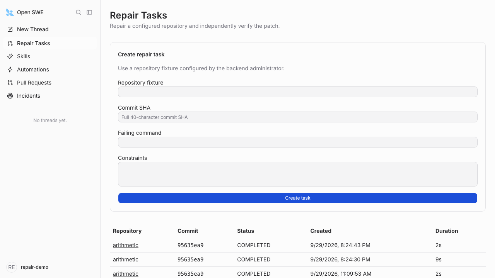
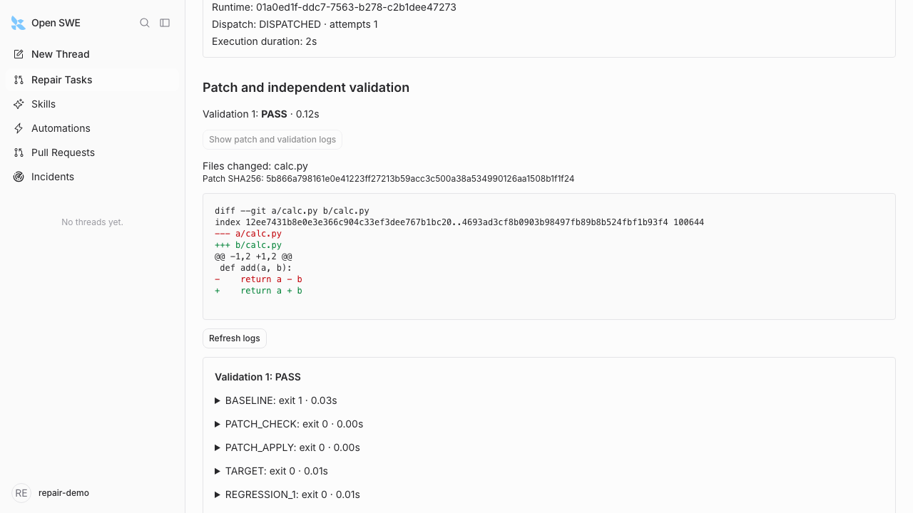

任务与持久派发
任务、Run 与派发意图同事务保存。Redis Stream 交付 Intent ID，PostgreSQL 租约管理执行权。
POSTGRESQL + REDIS STREAMSREPOSITORY REPAIR / INDEPENDENT VALIDATION
Repair. Recover. Verify.
选择仓库 fixture、目标提交与失败命令，系统完成任务派发、Agent 代码修改、补丁导出与干净环境验证。通过 Dashboard 查看状态、diff 和逐项验证日志。
任务管理 · 可靠派发 · 执行恢复 · 补丁验证
POSTGRESQL → REDIS STREAM → WORKER
Task + Run + DispatchIntent
// 在同一个事务中保存
XADD: intent_id
consume: XREADGROUP / XAUTOCLAIM
claim: PostgreSQL row lock
owner: lease + fencing token
unknown: RECONCILINGRuntime 创建结果未知时，按关联元数据查找已有执行。
CANDIDATE.PATCH calc.py
@@ -1,2 +1,2 @@
def add(a, b):
- return a - b
+ return a + b候选保存原始字节与 hash，交给新的干净 checkout。
FRESH CHECKOUT · FIXED COMMANDS
只有独立验证 PASS，任务才进入 COMPLETED。
PostgreSQL · Redis · Backend · Worker · Dashboard
任务创建 / 列表 · 任务详情 / 验证证据
独立验证是业务成功的必要条件
01 / CORE CAPABILITIES
Task → Agent → Patch
→ Independent Validation
任务、Run 与派发意图同事务保存。Redis Stream 交付 Intent ID，PostgreSQL 租约管理执行权。
POSTGRESQL + REDIS STREAMS派发、观察、候选收集与验证在独立进程运行。API 在 Worker 停止时继续接收排队任务。
STANDALONE WORKER关联业务 Run 与 Runtime Run。Worker 重启后接管过期租约，查询未知创建结果并校验 owner token。
LEASE & RECONCILIATION固定 base、补丁 hash 和测试计划。在干净 checkout 复现失败、应用补丁、运行目标与回归命令。
INDEPENDENT VALIDATION02 / SYSTEM ARCHITECTURE
Dashboard 将仓库、精确提交与失败命令交给 Backend。
PostgreSQL 保存任务与派发状态；Redis Stream 交付 Intent ID。图中 Runtime 位于 Backend 内，Worker 调用它执行 Agent；补丁导出与独立验证由 Worker 完成。
发布失败Intent 留在数据库，下轮重试 XADD。
重复投递数据库行锁与租约只允许一个 Worker 领取。
消费后崩溃待确认消息经 XAUTOCLAIM 接管。
取得租约后崩溃租约到期后对账 Runtime 执行身份。
Stream 丢失从 PostgreSQL 的待处理 Intent 重建消息。
03 / ACTUAL DASHBOARD


04 / EXECUTION RECORDS
任务、业务 Run、Runtime Run、候选补丁与验证记录通过 ID 关联。详情页将执行事件、修改内容和检查结果集中呈现，支持从最终状态追溯到具体命令与输出。
查看结果数据结构保存用户归属、输入参数、任务状态和 deadline，关联 thread 与 Runtime Run，按顺序记录派发、执行、验证与完成事件。
候选记录包含精确 base commit、原始 patch 字节、SHA-256 和修改文件列表，支持下载与独立 checkout 重放。
记录 baseline、patch check/apply、target 与 regression 的退出码、输出、耗时和超时信息，按需加载到详情页。
05 / RUN THE SYSTEM
从仓库根目录启动 PostgreSQL、Redis、Backend、Worker 与 Dashboard 五个服务。内置 arithmetic 示例使用确定性模型执行完整修复链。需要 Docker Compose v2 和 Python 3.9+。
启动与登录步骤# 仅首次生成；已有 .env.repair 时省略
python3 scripts/repair_init.py
docker compose --env-file .env.repair \
-f compose.repair.yaml up --build -d \
--wait --wait-timeout 180按 README 的登录步骤打开内置修复示例。